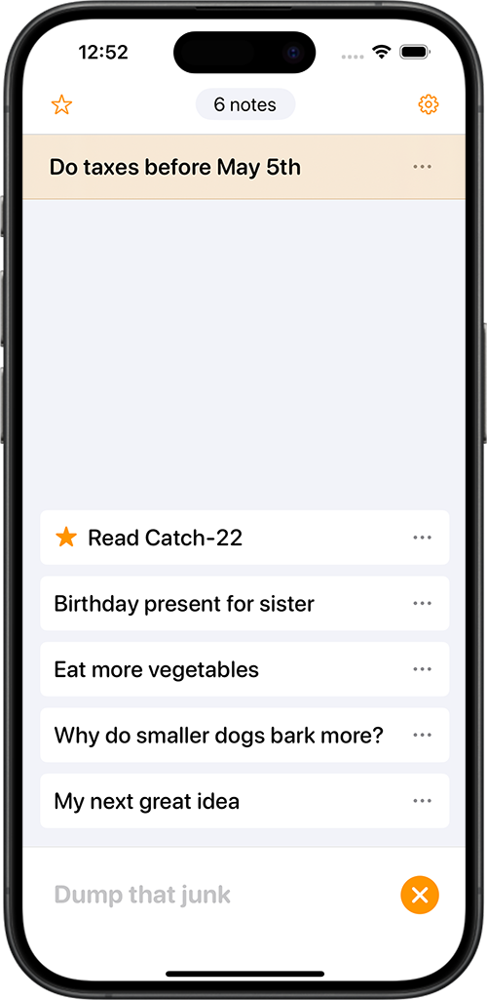

Random thoughts with nowhere to go?
Junkpad to the rescue!

Junkpad is an easy to use and minimal note taking app. Don't get caught up in overorganisation! Instead, embrace your chaotic stream of consciousness. All notes appear in the same list, sorted by last edited. This makes it easy to add notes without any fuss. Just type.